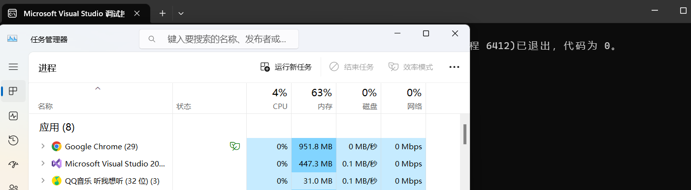

使用SendMessage()模拟鼠标操作
使用SendMessage()模拟鼠标操作
在样本分析工作中遇到一个样本，该样本先是打开Windows“运行”窗口，也就是常用的win + R的窗口，然后使用该窗口运行一个.chm文件，这个.chm文件的具体作用尚不清楚，不过杀软报毒，大概是实施二阶段攻击的恶意代码。
样本中使用SendMessage()来模拟鼠标操作，比较有意思，这里尝试复现一下。
具体思路是，先运行一个程序，打开该程序的窗口，然后使用FindWindows()找到那个窗口，找到窗口后使用SendMessage()向那个窗口发送消息，模拟鼠标的操作来修改该窗口的状态。
这里介绍一下几个可以用以创建进程的API。
WinExec(): 这个API是最好使用的，估计这个API的内部是通过ShellExecute()来实现的。
ShellExecute() & ShellExecuteEx(): 这两个API在MS文档上的描述都是对指定的文件执行一个操作。
但是这两个函数的区别在于：
- ShellExecuteEx()的返回值是布尔类型，使用这个API创建进程后将会自动调用CloseHandle()关闭进程对应的句柄。
- ShellExecute()的返回值则是新创建的进程的句柄
这里值得注意的是，ShellExecute()不仅能够对本地的文件执行操作，实际上也能够对URL执行操作。
CreateProcess(): 这个API就是ShellExecute() & ShellExecuteEx() 这两个API的底层实现。
另外，如果创建了进程句柄，就必须使用CloseHandle()关闭对应的句柄，因为即使进程终止，系统内核对象中的句柄以及已保存的状态都不会被清空。
虽然思路很清晰，但是具体实施还是比较麻烦的。
FindWindow
首先是需要找到要操作的窗口，使用FindWindow() & FindWindowEx()这两个API。
FindWindowA() 函数原型：
1 | |
参数：
lpClassName：一个字符串指针，用以指定要寻找的窗口的类名
lpWindowName：一个字符串指针，用以指定要寻找的窗口的名称，也即窗口的标题
返回值：
对应窗口的句柄。
The following table describes the system classes that are available for use by all processes.
| Class | Description |
|---|---|
| Button | The class for a button. |
| ComboBox | The class for a combo box. |
| Edit | The class for an edit control. |
| ListBox | The class for a list box. |
| MDIClient | The class for an MDI client window. |
| ScrollBar | The class for a scroll bar. |
| Static | The class for a static control. |
The following table describes the system classes that are available only for use by the system.
| Class | Description |
|---|---|
| ComboLBox | The class for the list box contained in a combo box. |
| DDEMLEvent | The class for Dynamic Data Exchange Management Library (DDEML) events. |
| Message | The class for a message-only window. |
| #32768 | The class for a menu. |
| #32769 | The class for the desktop window. |
| #32770 | The class for a dialog box. |
| #32771 | The class for the task switch window. |
| #32772 | The class for icon titles. |
这里我们比较关心的窗口类名就是"#32770"也就是系统对话框。
使用FindWindowA()找到了对应窗口后，我们还需要找到要操作的窗口组件，FindWindowEx()能够完成这个任务。
FindWindowExA()函数原型：
1 | |
参数：
hWndParent：使用FindWindowA() 找到的窗口对应的句柄
hWndChildAfter：用以指定从第几个组件开始寻找
lpszClass：用以指定需要寻找的组件的类名
lpszWindow：用以指定需要寻找的组件的名称
返回值：
对应窗口的组件的句柄。
在这篇文章中，需要使用FindWindowEx()找到用以输入命令的ComboBox（ComboBox类的窗口是一种常见的控件，它是组合框控件的实现，通常用于显示一个可编辑的文本框和一个下拉列表框，允许用户从列表中选择项或手动输入文本）以及“确定”按钮。
SendMessage
找到对应窗口的组件后，可以使用SendMessage()来模拟对该组件的操作。
SendMessage函数原型：
1 | |
参数：
hWnd：SendMessage()作用的窗口组件对应的句柄
Msg：要发送的消息，通常是系统预定义的消息。当然，程序也可以使用自定义的消息。
wParam：Word Parameter，附加于消息的参数
lParam：Long Parameter，附件于消息的参数
这里介绍一下常用的消息：
- WM_ACTIVATE：用以修改窗口的激活状态，如果窗口处于后台运行，那么这个消息能够激活该窗口；反之，如果窗口目前处于前台，那么这个消息会让窗口转为后台运行。
- WM_SETTEXT：用以设置窗口的文本内容，在参数
lParam中指定要设置的文本内容 - WM_LBUTTONDOWN：用以模拟鼠标左键Press效果，参数
lParam设为 “MK_BUTTON”，参数wParam用以指定鼠标点击位置 - WM_LBUTTONUP: 用以模拟鼠标左键Release效果，参数设置和WM_LBUTTONDOWN同理。
有了这些消息类型后，可以模拟出向指定ComboBox输入一条文本内容，然后鼠标点击运行的过程。
实例
这里将会运用同样的原理，使用“运行”窗口运行任务管理器(“taskmgr”)。
源码如下：
1 | |
程序运行结果如下：

注意上面的代码中，在使用ShellExecuteA()时，将fMask指定为"SEE_MASK_FLAG_NO_UI"，意即不要显示UI界面，即使是错误对话框，使用这个掩码是为了提高隐蔽性。
但是使用这个掩码后，得到的窗口也是未激活状态的，所以需要使用MS_ACTIVATE来激活窗口。
另外，在创建进程后，FindWindow()并不能马上找到对应窗口，所以需要将寻找窗口的函数写在一个循环体中。